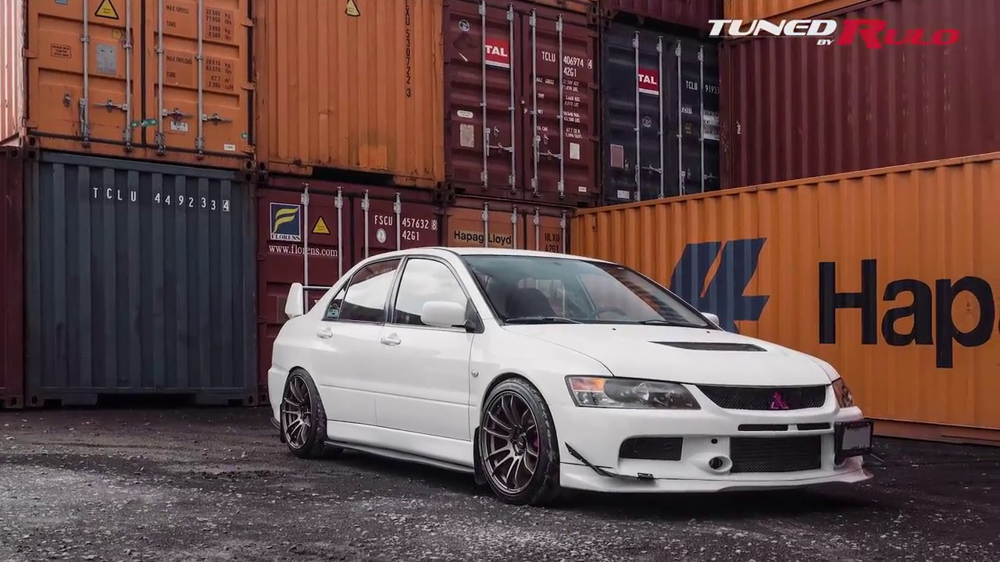

Erik Alonso Hernandez
Mitsubishi.
Mitsubishi Lancer Evolución IX
El Mitsubishi Lancer Evolution, coloquialmente conocido como Evolution o Evo, fue un automóvil de turismo sedán del segmento C producido por el fabricante japonés mitsubishi desde 1992 hasta 2016 y basado en el mismo monocasco que el Mitsubishi Lancer . Ha tenido 10 versiones hasta 2010, y cada modelo nuevo es diferenciado con un número romano (EVO I, EVO II...). Todos comparten motorización de 2.0 L, turbo y tracción integral permanente.
Las ediciones anteriores a la versión VII, fueron los modelos empleados por Mitsubishi en el Campeonato Mundial de Rallys. Este vehículo muy utilizado en todas las competiciones de rally en el mundo, compite bajo las normativas del Grupo A, Grupo N y WRC. La marca ha empleado el Lancer Evolution con las especificaciones del Grupo A, pero también ha construido y competido con la versión World Rally Car.
Los automóviles japoneses estaban limitados por un acuerdo de caballeros a no más de 280 CV (206 kilovatios), un límite impuesto libremente por el Estado. Pero esa cifra ya había sido alcanzada por el Evolution IV. Por lo tanto, cada versión no oficial posterior ha evolucionado por encima de las cifras de potencia anunciadas. Las especificaciones japonesas del Evolution IX dicen que alcanza una potencia de salida real de alrededor de 321 CV (236 kilovatios). Varias versiones disponibles en otros mercados, especialmente, tienen hasta 405 CV (298 kilovatios).
Precio de mercado: 45.000€